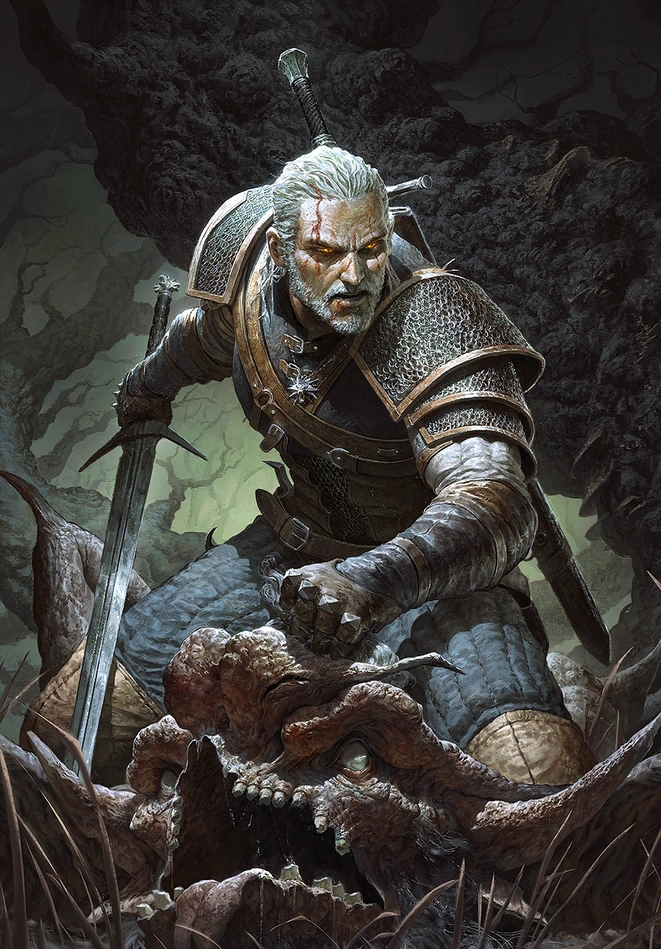

About Geralt
Geralt of Rivia is a Witcher - a Mutant Human created in order to protect regular citizens from Monsters.
Geralts Characteristics
- He has superhuman strength
- He doesn't speak much
- He tries to avoid political conflict but always ends up taking the right side
Friends
Geralt has a diverse cast of friends and companions who accompany him on his adventures